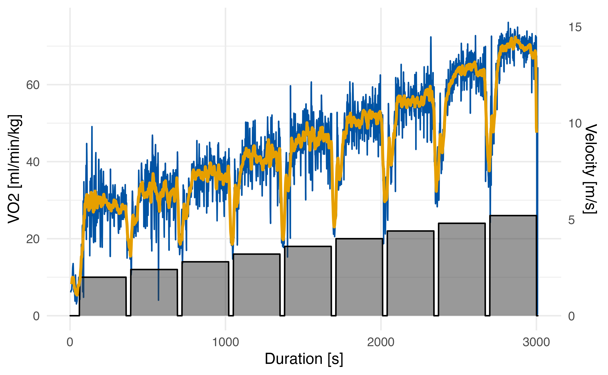

Different measuring devices and analysis software lead to opaque results in measuring gas exchange parameters. To make exercise science more transparent and reproducible, the spiro package offers a standardised workflow for data from metabolic carts.
This vignette provides you information on how to summarise and plot data previously imported and processed by spiro().
Load the data
library(spiro)
# import and process example data
file <- spiro_example("zan_gxt")
gxt_data <- spiro(file)
gxt_data
#> load step time VO2 VCO2 RR VT VE HR VO2_rel VCO2_rel RER RE
#> 1 0 0 1 NA NA NA NA NA NA NA NA NA NA
#> 2 0 0 2 NA NA NA NA NA NA NA NA NA NA
#> 3 0 0 3 NA NA NA NA NA NA NA NA NA NA
#> 4 0 0 4 399.08 323.70 13.94 0.77 10.72 0 6.05 4.90 0.81 NA
#> 5 0 0 5 409.83 330.26 14.50 0.74 10.66 0 6.21 5.00 0.81 NA
#> 6 0 0 6 420.58 336.82 15.06 0.71 10.60 0 6.37 5.10 0.80 NA
#> 7 0 0 7 431.33 343.37 15.63 0.68 10.53 0 6.54 5.20 0.80 NA
#> 8 0 0 8 435.30 346.51 16.06 0.69 11.04 0 6.60 5.25 0.80 NA
#> 9 0 0 9 437.02 348.52 16.46 0.71 11.74 0 6.62 5.28 0.80 NA
#> 10 0 0 10 438.74 350.53 16.85 0.74 12.44 0 6.65 5.31 0.80 NA
#> CHO FO
#> 1 NA NA
#> 2 NA NA
#> 3 NA NA
#> 4 0.20 0.13
#> 5 0.19 0.13
#> 6 0.19 0.14
#> 7 0.18 0.15
#> 8 0.18 0.15
#> 9 0.19 0.15
#> 10 0.19 0.15
#> ... with 2999 more rows
Stepwise summary with spiro_summary()
To analyse gas exchange data, usually mean parameters for each performed load step are warranted. To ensure the presence of a metabolic steady state, the end of each step is used for calculations.
spiro_summary(gxt_data, interval = 120)
#> for pre-measures, interval was set to length of measures (60 seconds)
#> step_number load VE VO2 VCO2 RER VO2_rel RE CHO FO
#> 1 0 0.0 13.03 500.19 411.74 0.82 7.58 NA 0.27 0.15
#> 2 1 2.0 39.87 1860.92 1585.75 0.85 28.20 234.97 1.27 0.46
#> 3 2 2.4 44.63 2097.82 1805.27 0.86 31.79 220.73 1.51 0.49
#> 4 3 2.8 52.63 2413.01 2122.17 0.88 36.56 217.62 1.95 0.48
#> 5 4 3.2 57.19 2710.68 2319.93 0.86 41.07 213.91 1.89 0.65
#> 6 5 3.6 67.45 3048.75 2684.87 0.88 46.19 213.86 2.47 0.60
#> 7 6 4.0 75.91 3404.02 3026.70 0.89 51.58 214.90 2.90 0.62
#> 8 7 4.4 88.36 3724.37 3383.64 0.91 56.43 213.75 3.50 0.56
#> 9 8 4.8 106.44 4223.82 3993.55 0.95 64.00 222.21 4.68 0.37
#> 10 9 5.2 127.54 4573.91 4488.36 0.98 69.30 222.12 5.82 0.12The length of the computational interval (in seconds) can be modified by setting the interval argument. If the interval exceed the length of any step in any case, it will be shortened displaying a note.
Overall summary with spiro_glance()
For some types of exercise tests it may be preferable to get an overall instead of a stepwise summary of parameters. spiro_glance() will usually show the maximal values within the test after applying a smoothing by the use of a rolling average.
spiro_glance(gxt_data, interval = 30)
#> VO2peak_abs VO2peak_rel RER_peak
#> 1 4732.28 71.7 1.15In the case of graded incremental or ramp tests, the interval argument will set the length over which the rolling average will be computed.
For constant load tests spiro_glance() will behave different, as not the maximal values, but the overall average is usually useful to be calculated. Therefore the mean parameter values for all steps of the constant load will be displayed.
Plotting the data
To plot exercise test data handled by spiro() it is recommend to use specific visualisation packages such as ggplot2 on the data. However, to provide a quick view on the compiled data (e.g. for checking if the import operated correctly) the spiro package offers basic shorthand functions of data visualisation.
Plotting oxygen uptake data
In many cases, the (relative) oxygen uptake will be the parameter of most interest when analysing spiroergometric data. spiro_plot_VO2() visualises the interpolated oxygen uptake data, it’s rolling average and the underlying protocol load.
The length of the computational interval for the rolling average can be changed by setting the smooth argument. To allow a further check for correct importing, setting the title argument to TRUE will create a plot title with the participant’s name and the test type.
spiro_plot_VO2(gxt_data,
smooth = 15,
title = FALSE
)
Plotting heart rate data
To verify the presence of correct heart rate data, spiro_plot_HR() provides an easy option of visualising the data together with the protocol load data.
To allow a further check for correct importing, setting the title argument to TRUE will create a plot title with the participant’s name and the test type.
# load example data
data_with_hr <- spiro(spiro_example("zan_ramp"),
hr_file = spiro_example("hr_ramp.tcx"))
spiro_plot_HR(data_with_hr,
title = FALSE
)